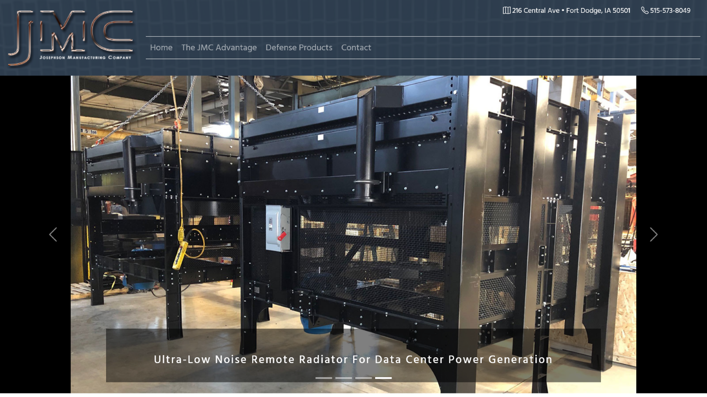

Angular interface
The public pages and protected product-management screens were contained in one Angular application and used Bootstrap for layout and responsive behavior.
Web Developer
Client Website
An Angular website for a radiator manufacturer with a custom, authenticated product-management area backed by Node, Express, and MongoDB.
Angular / Node.js / MongoDB / AWS

Project Overview
Josephson Manufacturing needed a straightforward public website, but the product catalog needed to be updated without editing source files. I built a protected administrative workflow for creating, editing, and deleting product records.
The Challenge
The site did not need a large content-management system. It needed one focused workflow that allowed product information and images to be maintained separately from the rest of the website.
The public Products page loaded its records from the backend and displayed each product's name, number, description, and image. Authenticated users received access to separate administrative routes for maintaining those records.
The same Angular reactive form supported both creating and editing products. Image files were validated, previewed in the browser, uploaded through the API, and stored with the product data.
Key Implementation
Angular handled the public and administrative interfaces. Node and Express provided the API, MongoDB stored the product and user records, and JWT authentication protected the management tools.
The public pages and protected product-management screens were contained in one Angular application and used Bootstrap for layout and responsive behavior.
A shared reactive form supported creating and editing products, including validation, image selection, and a browser preview.
Express routes provided product CRUD operations while JWT middleware protected create, update, and delete requests.
MongoDB stored product and user records. The Angular frontend was hosted on Amazon S3, while the Node and Express backend ran through AWS Elastic Beanstalk.
Supporting Details
The project combined public product browsing with a small set of protected tools for maintaining the catalog.
Project Reflection
This was a real client website that was deployed and used by Josephson Manufacturing. The company is no longer using the site, but I kept the project because it represents an important early full-stack build in my career.
A complete product-management workflow from an Angular interface through an authenticated Express API to MongoDB, including image uploads, protected administration, and separate AWS deployments for the frontend and backend.
Today I would use current framework versions, improve accessibility throughout the interface, add automated frontend and backend tests, strengthen validation and error handling, and automate more of the deployment process. I would keep the original decision to build only the administrative features the client actually needed.
Next case study
Real Estate Admin